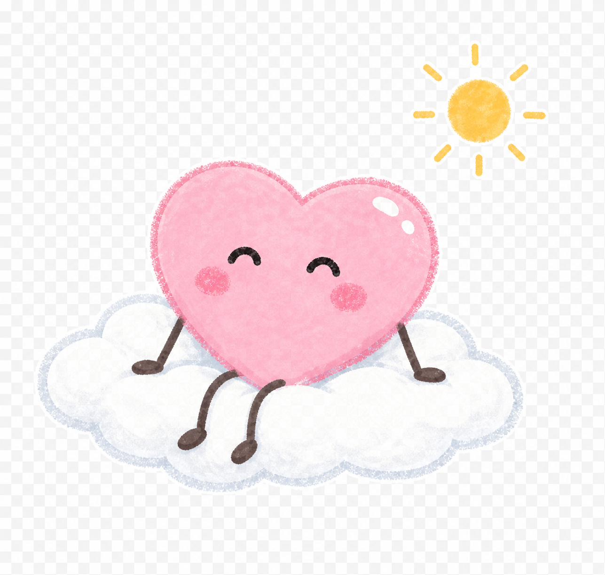

生活娱乐 · 社会公益 · 青少年身心健康

在呀 ZÀIYA
面向社会功能受损青少年的陪伴式 AI 健康生活管理助手
每 6 名中小学生，约有 1 名有可诊断的精神障碍。
已确诊患者中，仅约 10% 获得规范治疗。
数据来源：北京大学第六医院《中国精神卫生调查》，The Lancet Psychiatry
家长看见的
只有结果，不知道过程
孩子为什么不出门、为什么不吃饭、这周到底发生了什么——问不出来，也看不见。
医生看见的
十几分钟门诊，无日常数据
两次复诊之间间隔 2—4 周，这段时间里发生了什么，医生只有孩子的口头描述可以参考。
孩子说得出的
说不清楚这段时间怎么过来的
功能损伤让记忆和表达本身都变得困难。问诊时的"还好"背后，有一整段无人记录的日子。
"抑郁症的典型症状就是懒。家人总是说我懒还让我多社交多运动。"
小红书用户评论 · 点赞 13,000+
"她能不上学是有一个可以托底的妈妈，羡慕。我的孩子也是这样，可我没钱托底，我快疯了，我要怎么办。"
小红书用户评论 · 两条相邻留言 · 综合点赞 27,000+
核心使用者
10—18 岁，社会功能已明显受损的青少年。有明确诊断（焦虑障碍、抑郁症、双相情感障碍等）的，或虽未确诊但作息、学习、社交、家庭功能已受影响的。人群可延伸至 30 岁以内、问题模式同源的年轻人。
家长
决策者与付费方。意识到孩子需要帮助，但难以理解孩子状态、难以向家庭其他成员和医生清晰描述发生了什么。
医生 / 咨询师
报告接收方。每次门诊时间有限，需要更连续的信息来支持判断，调整复诊方案。
在呀 ZÀIYA 登记类别为健康管理工具，不提供精神疾病诊断、药物处方或心理治疗服务。
陪伴层
降低行动门槛
「在在」常驻手机桌面与智能手表，在早起、睡前、吃饭、运动时就在那儿——通过陪伴演示而非指令提醒，轻轻邀请用户开始。它不讲大道理，不催任务，不弹生硬通知。对功能损伤人群而言，不需要主动触发，是产品能真正被用起来的前提。同时提供用户间的轻社交场景，借鉴团体治疗中希望灌注与行为模仿机制。
为功能损伤人群设计，意味着对"不做什么"的判断比"做什么"更重要。
× 不打卡，不记天数，不设任务
连续打卡、完成率、进度条对功能损伤人群有明确的负向反应。在在记录的是发生了什么，不评价做得对不对。
× 对话，不是表单
表单要求主动发起和结构化回答，这对动力和秩序已受损的人是真实障碍。在在用的是日常对话——不是"请填写今天的情绪值"，而是"今天怎么样"。
× 助手，不是治疗师
在在不给情绪建议，不替代医生或咨询师。它记录日常，整理数据，把信息传递到需要它的地方。
现有方案的边界
-
AI 情绪陪伴产品 → 输出只到用户，数据不进入临床系统
-
医院信息系统 → 仅有就诊记录，复诊间隔期是空白
-
各类量表与表单 → 功能损伤人群依从性极低
-
即便最完整的竞品，也只将医疗机构视为转介渠道，从不视为数据接收方
在呀的定位
-
AI 对话采集日常数据，不依赖填表
-
连续记录覆盖复诊间隔期，填补信息断层
-
双端输出：用户看见生活规律，临床端获得结构化数据
-
把日常生活数据转化为临床和家庭系统都可读取的结构化信息
当前市场约有 2,500 款心理健康产品。没有一款系统地向临床端输出结构化生活数据。这个位置，目前是空的。
临床认知 · 亲历经验
核心成员有超过二十年双相情感障碍的亲历康复历程，正跟随斯坦福张道龙教授接受 DSM-5-TR 规范化培训，系统掌握 DBT、CBT、MI 等临床框架，背后有中美顶尖医疗机构的专家顾问支持。我们不是从外部观察这个人群，而是走过来的。
产品判断 · 用户理解
另一位核心成员长期在头部互联网公司负责产品与运营。做功能损伤人群的产品，最难的不是"能做什么功能"，而是判断"这个交互对这个人群是真有用还是看起来有用"——这是不能外包给 AI 的判断力。
团队此前已有面向该人群的实践积累：纸质健康管理笔记本、家庭个案管理服务，以及已完整开发上线的小程序原型。在呀 ZÀIYA 在真实反馈基础上重构而来。
我们希望「在呀 ZÀIYA」成为社会功能受损青少年身边稳定、低压力、一直在场的支持系统。它不替代医生、咨询师或家长，而是将散落在日常里的变化记录下来，让困难更早被看见，让家庭少一点误解，让专业干预有更连续的依据。
真正有价值的结果，不是多完成几次打卡，而是一个被生活困住的孩子，能从一顿饭、一次入睡、一次出门开始，慢慢重新回到自己的生活里。